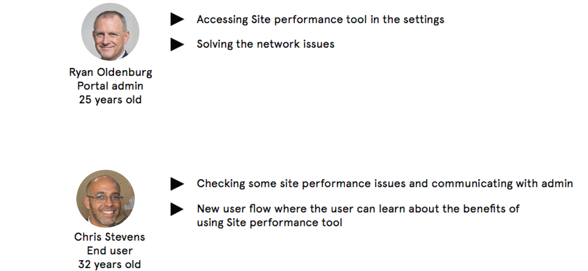
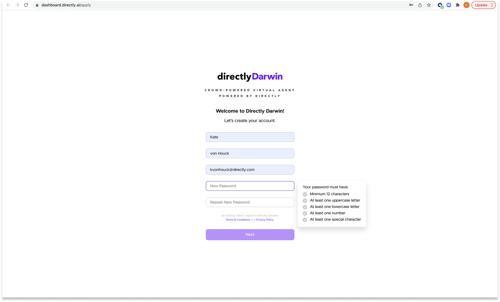

DIRECTLY ONBOARDING EXPERIENCE
PROBLEM
The current onboarding experience fails to align with Directly's self-service direction and product vision. The existing flow doesn't effectively communicate the product's value proposition to administrators, making it difficult for them to understand how the platform can improve their daily operations and workflow efficiency.
SOLUTION
Redesign the onboarding experience to clearly demonstrate the platform's value and benefits. Create a streamlined process that helps administrators understand how Directly will enhance their daily operations, improve team efficiency, and deliver better customer service outcomes. The new design focuses on immediate value recognition and practical implementation guidance.
ROLE
As the lead UX/UI designer, I collaborated closely with key stakeholders including two product managers, the CEO, and engineering team to deliver a comprehensive onboarding solution. I partnered with the digital marketing team to develop compelling content that effectively communicates Directly's value proposition. Through an iterative and collaborative design process, I successfully delivered the complete onboarding experience within a 3-week timeline, meeting all project milestones and stakeholder requirements.
TOOLS & PLATFORM
The project was developed exclusively for web platforms, focusing on creating a seamless desktop experience. I utilized Figma for creating high-fidelity prototypes and interactive mockups, enabling efficient stakeholder feedback and iteration. For the onboarding flow implementation, I leveraged a specialized user flow platform to design and test the step-by-step onboarding dashboard, ensuring a smooth and intuitive user journey.
Platform: Web
Date: 2022
TARGET MARKET
The primary personas are Administrators who need to set up and manage their company's presence on Directly, including the creation and configuration of chatbots. These users are typically technical decision-makers or team leads who are responsible for implementing and maintaining their organization's customer support infrastructure. They require a streamlined onboarding process that helps them quickly understand the platform's capabilities and get their company's support system up and running efficiently.
PERSONA & USE CASES
MOTIVATIONS
Jane needs to have the chatbot to reflect the most up to date information, content and in a controllable way. She is detail-oriented person and she makes sure everything looks right.
GOALS
- Makes sure the knowledge is accurate and helpful.
- Needs to create the Chat Bot fast.
- Needs to understand all the benefits of the product.
- Needs to know when and how to improve content for Bot.
USE CASES
CURRENT ONBOARDING EXPERIENCE
Key Challenges
- The existing onboarding flow lacks alignment with modern SaaS product expectations and best practices.
- Critical product information and value propositions are not effectively communicated during the onboarding process.
- Users face unnecessary friction and time investment before reaching core product functionality.
- User feedback indicates a strong desire for immediate access to chatbot creation capabilities.
PROCESS


DISCOVER MAIN PAIN POINTS AND USER DATA
The research methodology combined quantitative analysis of Darwin's existing metrics with qualitative user testing sessions. The primary focus was identifying key user needs and optimizing the onboarding structure for new users.
- The platform lacks a modern SaaS-style onboarding experience, resulting in users struggling to discover and utilize key features and benefits effectively.
- User research revealed a strong preference for immediate access to chatbot creation functionality.
- The existing onboarding process created unnecessary friction, significantly extending the time required to create the initial chatbot.
- The current onboarding experience failed to effectively convert new visitors into active users.
User Research Data Analysis
COMPARE
Before: Original Onboarding Experience
After: New Signup Experience


DETAILS
The onboarding flow was designed to guide users through a clear, step-by-step process that emphasizes immediate value and practical implementation. Each step was carefully crafted to reduce friction and increase user confidence.
- Initial Sign-up: Streamlined registration process with clear value proposition and immediate access to key features.
- Company Setup: Guided company creation with contextual help and best practices.
- Chatbot Configuration: Intuitive interface for setting up and customizing the chatbot.
- Success Metrics: Clear visibility into implementation progress and next steps.
COMPANY CREATION
The company creation process was designed to be intuitive and efficient, allowing administrators to quickly set up their organization's presence on the platform. Each step provides clear guidance and immediate value.
- Company Information: Streamlined form for entering essential company details with smart validation and auto-save functionality.
- Brand Customization: Easy-to-use interface for uploading logos and setting brand colors with live preview.
- Team Setup: Flexible options for adding team members and assigning roles with clear permission guidelines.
- Integration Options: Seamless connection with existing tools and platforms through guided setup process.

BOT CREATION
The bot creation process was designed to be straightforward and efficient, enabling administrators to quickly set up and customize their chatbot. The interface guides users through each step while providing immediate feedback and preview capabilities.
- Bot Configuration: Simple setup process for defining bot personality, response style, and core capabilities.
- Knowledge Base: Intuitive interface for importing and organizing content with smart categorization.
- Response Templates: Easy-to-use system for creating and managing common response patterns.
- Testing & Preview: Real-time testing environment with detailed analytics and improvement suggestions.

DETAILS
The redesigned bot creation process prioritizes immediate value delivery by enabling users to create their initial chatbot right from the start. This streamlined approach significantly reduces the time-to-value and enhances user engagement from the first interaction.
- Essential Customization: Users can immediately personalize their bot by setting a name, selecting an avatar, and choosing a theme color that aligns with their brand identity.
- Enhanced User Experience: These core customization features, previously unavailable during onboarding, now provide users with immediate control and ownership of their bot.
- Streamlined Process: The simplified interface focuses on essential elements first, allowing users to quickly establish their bot's identity before diving into more advanced configurations.
- Immediate Value: By enabling bot creation at the start, users can immediately see the practical application of the platform, increasing engagement and reducing initial setup friction.


LAUNCHER DETAILS
The launcher customization process empowers users to create a personalized entry point for their chatbot. The interface provides immediate visual feedback, allowing users to see their changes in real-time and make informed decisions about their bot's appearance and messaging.
- Visual Customization: Users can select and customize the launcher icon to match their brand identity and create a cohesive visual experience.
- Message Personalization: The ability to craft the initial launcher text enables users to set the right tone and expectations for their customer interactions.
- Live Preview: The real-time preview panel on the right side provides immediate visual feedback, helping users make confident design decisions.
- User Experience: This intuitive customization process ensures users can quickly create a professional and engaging chatbot interface without requiring technical expertise.
OUTCOME
The implementation of the self-service onboarding experience has significantly improved user engagement and satisfaction. By enabling users to create their account and chatbot immediately, we've reduced the time-to-value and increased the understanding of Darwin's benefits for daily operations.
- Immediate Value Delivery: Users can now quickly establish their presence on the platform and begin experiencing the benefits of Darwin's features from day one.
- Clear Value Proposition: The streamlined onboarding process effectively communicates how Darwin can enhance daily operations and improve team efficiency.
- User Feedback: Post-launch research with both current and new users revealed overwhelmingly positive responses to the improved onboarding experience.
- Future Improvements: User feedback highlighted the need for a step-by-step onboarding experience on the dashboard, which has been identified as a key focus for the next phase of development.